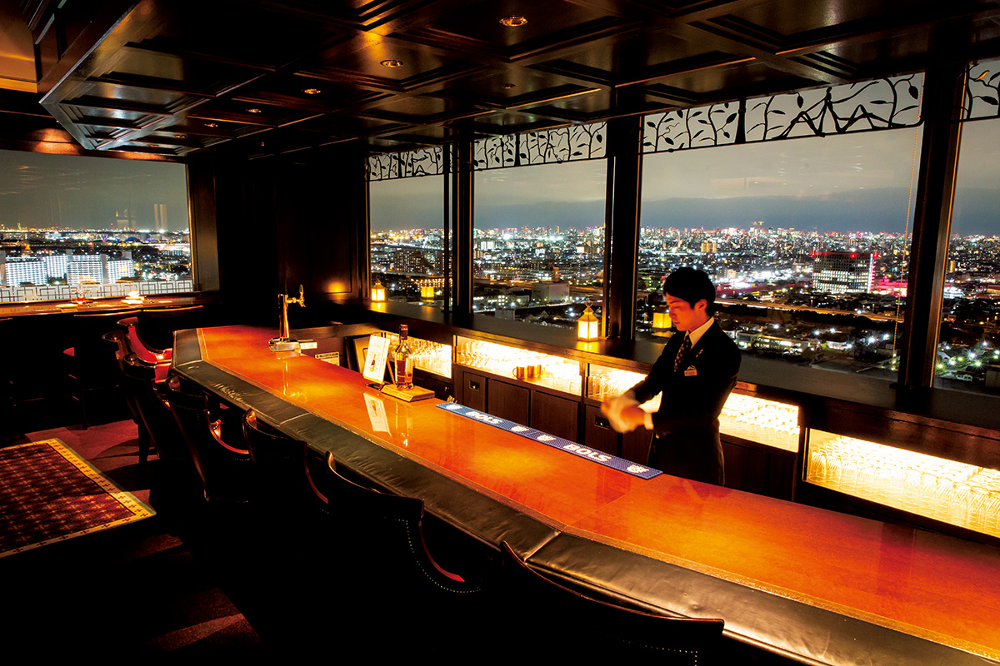
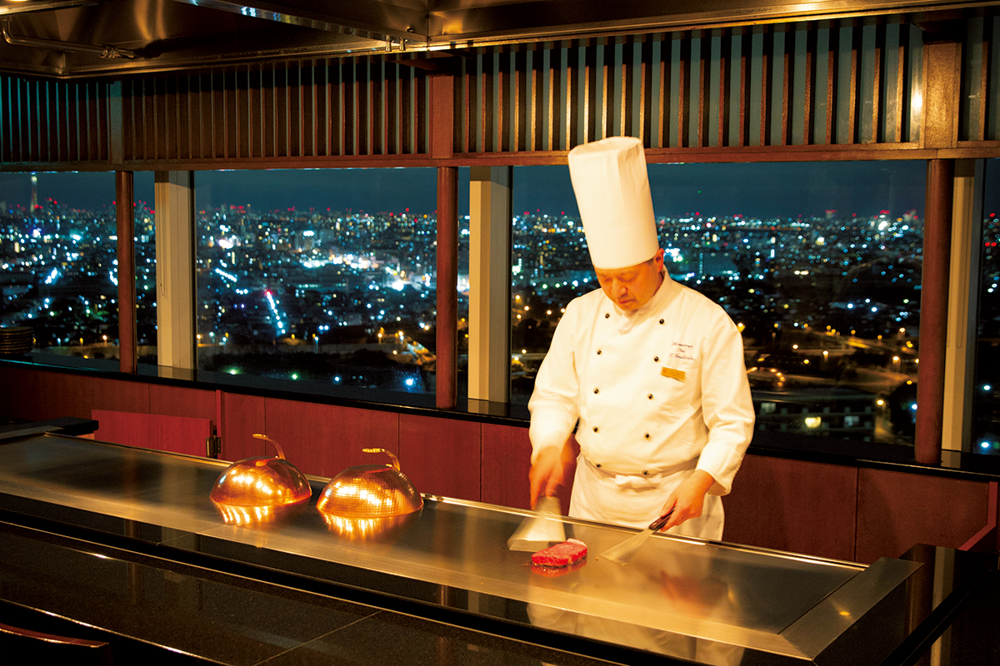
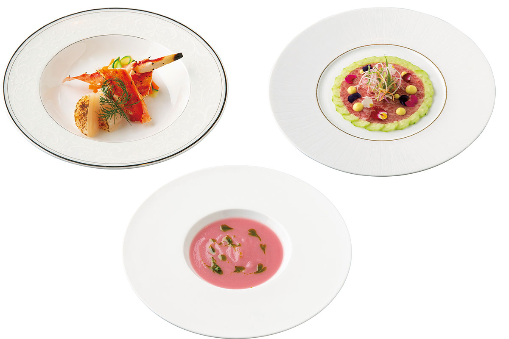
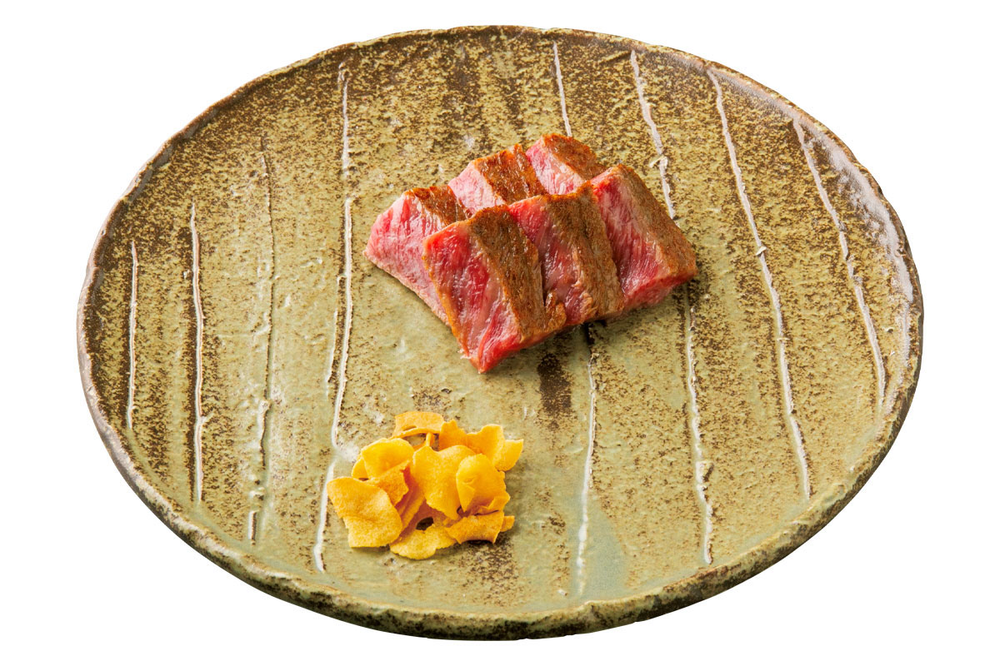
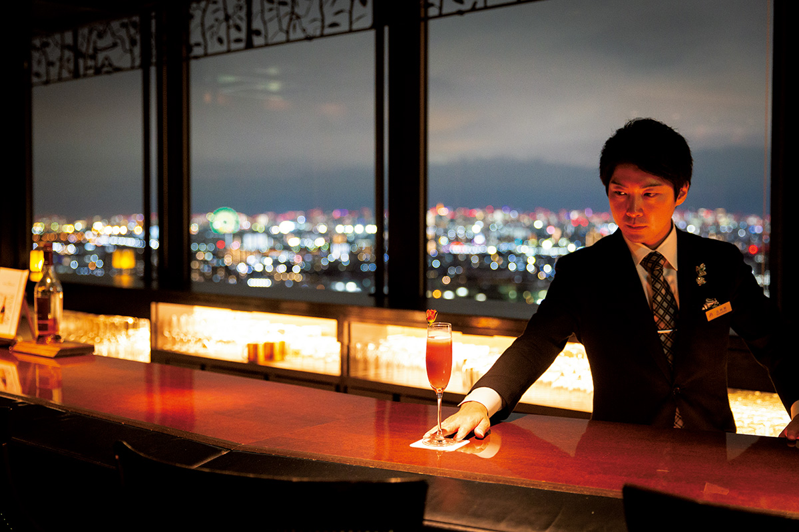
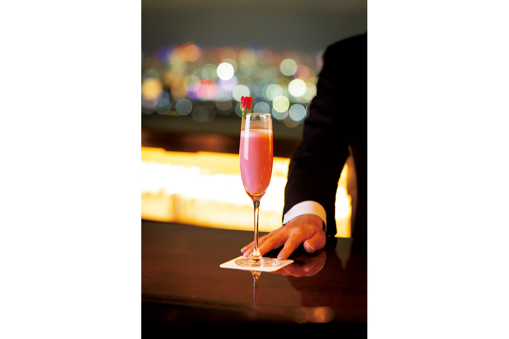
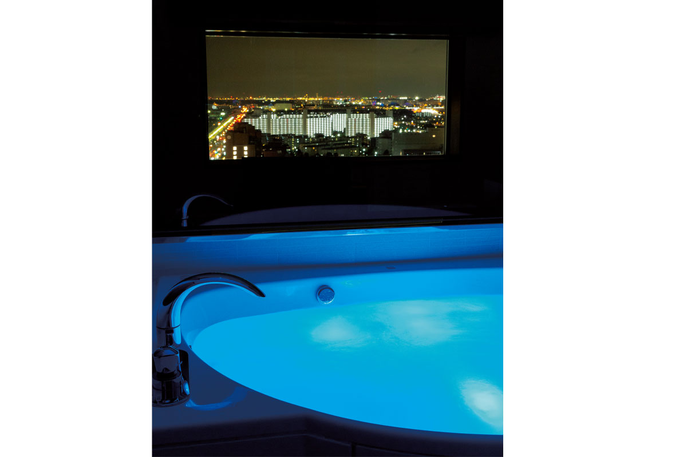
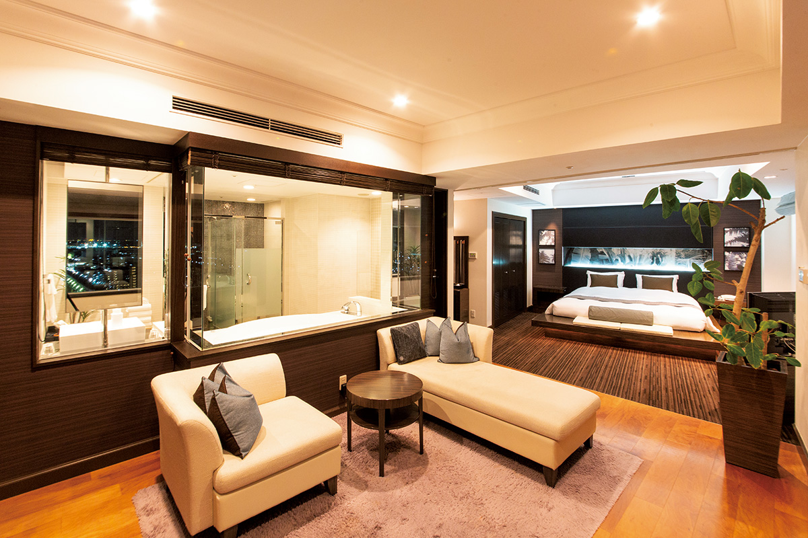
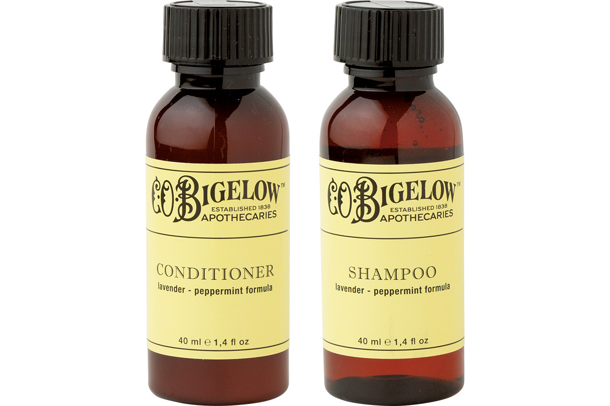
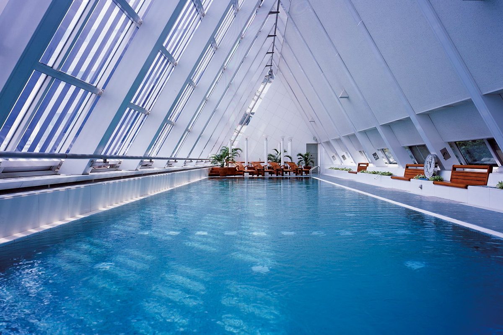

Префектура Тиба · Ураясу · отель
Urayasu Brighton Hotel Tokyo Bay: вечер над Токийским заливом от ужина у тэппана до ванны с видом

Если хочется сделать ночь в отеле особенной, нужны две вещи: хороший ужин и красивый вид. Urayasu Brighton Hotel Tokyo Bay в Ураясу предлагает и то и другое, а от Токийского вокзала сюда около 20 минут.
Отель
Ночь для двоих у Токийского залива
Ураясу лежит на берегу Токийского залива, на самом западе префектуры Тиба, у границы с Токио. Urayasu Brighton Hotel Tokyo Bay соединён со станцией JR Синъураясу переходом, и до дверей отеля от платформы около минуты пешком. Это место для тех, кто хочет провести вечер вдвоём чуть роскошнее обычного и ненадолго забыть о буднях.
Во всех номерах стоят кровати, сделанные на заказ компанией France Bed, и массажёры для ног. На верхних этажах устроен отдельный этаж The Floor PREMIUM DOORS с шестью типами номеров: «Мидзукагами» оформлен в спокойном японском стиле, «Газебо-сьют» напоминает курорт в Юго-Восточной Азии. Гостям этажа полагаются приветственный напиток, закуски и особая косметика. К празднику можно заказать ванну с лепестками, украшение номера, букет или торт.
Есть и серия номеров, где ночной город виден прямо из ванны. В одних стоит широкая ванна длиной 3 метра с подсветкой семи цветов, в других круглая ванна новой модели.
С апреля 2026 года по март 2027 года в отеле идёт плановый ремонт номеров, и их отделка может отличаться от снимков.
Самое интересное ждёт на 22-м, последнем этаже. Ресторан тэппанъяки и бар в английском стиле обращены к Токийскому заливу и окружены большими окнами. Отсюда видно и «волшебный час» после заката, и огни ночного города.
19:00
Тэппанъяки с видом на ночной залив
Вечер начинается в ресторане тэппанъяки «Химороги» на последнем этаже. Повар готовит на железной плите длиной 2 метра прямо перед гостями, и разговор с ним здесь такая же часть ужина, как и вид за окном.

В рекомендуемый сет добавлены французские штрихи, чтобы ужин выглядел праздничнее. После закуски, супа и камчатского краба идёт главное блюдо, а дальше сезонные овощи с плиты и рис в конце.


Вагю «Фурано» выращивают на Хоккайдо, и его жир славится сладким вкусом. Повар доводит мясо до нужной степени прожарки, а соусы позволяют менять вкус от кусочка к кусочку.
Ресторан тэппанъяки «Химороги»
- Телефон
- +81 47-350-9096 (10:00–20:00)
- Часы работы
- обед 11:30–14:30, ужин 17:30–21:30 (последний заказ 21:00)
21:00
Коктейль в английском баре
После ужина можно перейти в бар Martlet. За входом в классическом английском духе, с тяжёлой тёмной отделкой, открываются большие окна, а в них светятся колесо обозрения и телебашня Tokyo Skytree. Бармену достаточно описать вкус, который нравится, и он смешает авторский коктейль по сезону.

В меню больше 100 напитков, от классики до авторских. Есть и план «счастливых часов»: закуски вместе с безлимитными напитками.

Бар Martlet
- Телефон
- +81 47-350-9097 (17:00–23:00)
- Часы работы
- 18:00–24:00 (последний заказ 23:30), в субботу и праздники до 23:00 (последний заказ 22:30)
- Выходные
- воскресенье
23:00
Ванна с видом в номере-сьюте
Номер «вью-бас сьют» площадью 73 м² находится на особом этаже The Floor PREMIUM DOORS, на 20-м и 21-м этажах. Главное в нём ванна, которой гордятся больше всего: можно набрать её до краёв, погасить свет и смотреть на ночной город в одиночестве.



10:30
Утро в бассейне и спа
Выезд из отеля в 12:00, так что утро можно провести без спешки. На 4-м этаже работает клуб для членов «Джинас»: гости отеля могут за плату пользоваться бассейном, джакузи и спа. Есть и программы косметических процедур, рассчитанные как раз на время до выезда.

Клуб «Джинас»
- Часы работы
- бассейн 10:00–21:30, в субботу, воскресенье и праздники до 20:00; косметические процедуры 11:00–19:30
- Цены / Вход
- для гостей отеля 3000 иен (бассейн, джакузи, баня, сауна)
Urayasu Brighton Hotel Tokyo Bay
- Адрес
- префектура Тиба, Ураясу, Михама, 1-9
- Телефон
- +81 47-355-7777
- Номера
- 189
- Цены / Вход
- от 24 000 иен с налогом за ночь с ужином и завтраком (2021 год)
- Заезд / выезд
- 15:00 / 12:00
- Как добраться
- прямой переход от станции JR Синъураясу, около 1 минуты пешком
Фото: Ямато Нонака.